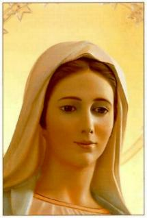

APRESENTAÇÃO
NA IGREJA
 A Coroação de Nossa Senhora é uma
solenidade que objetiva saudar, louvar e honrar a Virgem Maria, reconhecendo
a Sua Maternidade Divina e sua Maternidade Espiritual da humanidade. Ela é Mãe
da Igreja e portanto, é Nossa MÃE, constituida por NOSSO SENHOR JESUS
CRISTO, no derradeiro momento de sua vida , quando encerrou o seu Divino
testamento e morreu numa Cruz, em Jerusalém.
A Coroação de Nossa Senhora é uma
solenidade que objetiva saudar, louvar e honrar a Virgem Maria, reconhecendo
a Sua Maternidade Divina e sua Maternidade Espiritual da humanidade. Ela é Mãe
da Igreja e portanto, é Nossa MÃE, constituida por NOSSO SENHOR JESUS
CRISTO, no derradeiro momento de sua vida , quando encerrou o seu Divino
testamento e morreu numa Cruz, em Jerusalém.
Então a solenidade deve se revestir da maior pompa, respeito e profundo fervor
espiritual, visando deixar evidente a devoção sincera da Comunidade Eclesial e a
grandeza do amor de seus membros, que será traduzido pela intensidade do carinho
e do maior interesse que puderem demonstrar durante a cerimônia.
De um modo geral, a imagem de Nossa Senhora é colocada na parte mais alta de um
“Altar Preparado”. De
um lado e de outro se colocam degraus de acesso, que convergem para um pequeno
patamar atrás da imagem. O “Altar
Preparado” e os acessos (degraus) são enfeitados com tecidos,
papeis coloridos e flores. Defronte ao Altar Preparado, que deverá ficar ao lado
do Altar Principal de Celebração, deverá haver um degrau para os Anjos se ajoelharem diante de Nossa
Senhora e também, poderá ser colocado um banco com genuflexórios, para os Anjos
ajoelhar e assentar, durante a celebração da Santa Missa.
Escolhem-se meninas e meninos, se possível, com igual altura e sendo pretos e
brancos. Eles serão os Anjos que irão Coroar Nossa Senhora. Para mostrar que os
Anjos não tem sexo, deverão vestir com a mesma cor: cor branca, ou cor
azul ou cor vermelho. As asas poderão ser de papel crepom, ou penas de pássaros,
ou uma imitação semelhante. Também deverão ser pintadas da mesma cor da veste,
um pouco mais clara. Importante: a vestimenta de todos os Anjos deverá ser
absolutamente igual. Democraticamente, por sorteio entre os Anjos, será
escolhido aquele que conduzirá a Coroa e que também, irá coroar Nossa Senhora.
Os demais Anjos conduzirão pequenas cestas de vime (ou de outro material), com
pétalas de rosas de variada coloração.
A beleza da roupa e os ornamentos colocados nos Anjos deverão ser absolutamente
iguais, vistosos, bonitos, mas sem exageros. O Anjo é um ser inteligente,
bonito, obediente e muito discreto.
A procissão de entrada deve ser festiva, alegre e cantada, com os Anjos à frente,
seguido pelos Coroinhas, Ministros da Eucaristia, Diáconos e o Sacerdote.
Os Anjos tomam a direção do Altar Preparado e o Sacerdote caminha para
o Altar de Celebrações acompanhado dos Coroinhas, Ministros e Diáconos, fazem
o cumprimento de praxe e a seguir, caminham até a imagem de Nossa Senhora e a
cumprimentam, fazendo juntos uma profunda reverência. Os Anjos postados no Altar
Preparado agilizam providências para a Coroação. O Sacerdote, Ministros e Diáconos,
depois de saudarem Nossa Senhora, permanecem no mesmo local, ou seja, ao lado
do degrau e do banco onde os Anjos posteriormente permanecerão, após a Coroação.
A seguir, inicia a cerimônia de Coroação: os Anjos, um de cada lado,
sucessivamente, cantarão quadrinhas de louvor a MÃE DE DEUS, agradecendo o
carinho e a atenção Dela, assim como as preciosas graças que Ela consegue de
DEUS para toda a comunidade paroquial. No máximo, deverão cantar, dois Anjos de
cada lado. A seguir o Anjo com a Coroa, canta a quadrinha de coroação como prova
de amor e fidelidade da comunidade paroquial a MÃE DE DEUS e faz a
Coroação, ao mesmo tempo em que os outros Anjos derramam uma chuva de
pétalas de rosas sobre Nossa Senhora, os Sinos da Igreja repicam, a sineta dos
Coroinhas ressoam e toda Comunidade aplaude efusivamente. A seguir começa a
Santa Missa.
Na homilia, o celebrante não deve exceder a 20 minutos e sobretudo, deve
homenagear Nossa Senhora, descrevendo para a Comunidade, uma
“imagem possível”
da Coração de Nossa Senhora no Céu.
Com este propósito, para auxiliar o Sacerdote nesta missão, sugerimos que ele visite
a Página Anterior desse Site: “CHEGADA
DE NOSSA SENHORA AO CÉU”: onde ele poderá se
inspirar ou extrair idéias para a sua homilia.
Se a Coroação for realizada semanalmente, os temas da homilia deverão variar,
embora o tema central da coroação não deve ser omitido.

SUGESTÕES
DE QUADRINHAS
Nossa Senhora Mãe querida,
Agradecidos de coração,
Aceitai os nossos versos,
Que são provas de veneração.
Obrigado pelo Vosso Amor,
Obrigado por Vossa Intercessão,
Obrigado por Vosso imenso carinho,
Obrigado pela Vossa inesquecível afeição.
Fechai Vossos Olhos aos nossos pecados,
Ilumine nosso caminho com Vossa Luz,
Que é brilhante, eficaz e nos conduz,
Nos defende das ciladas do mal irado,
Por Vossa Misericórdia e Vosso Amor,
Purificai o nosso pobre coração,
Que amemos a DEUS com fervor,
E a Senhora, com plena devoção.
Receba esta Coroa, Mãe Querida,
Modesto símbolo de gratidão,
Expressão do amor de nossa vida,
Homenagem sincera de nosso coração.
MÚSICA PARA
AS QUADRINHAS
As Equipes de Liturgia e de Canto, deverão
se unir com os Músicos, não só para idealizar outras quadrinhas, assim como para
estudar a melhor maneira de musicá-las.
Nesta oportunidade, deverão escolher também,
as músicas de entrada e aquelas que serão cantadas durante a Celebração
Eucarística.
OUTRAS
PROVIDÊNCIAS
As quadrinhas e as músicas deverão ser
impressas e distribuídas aos fieis, a fim de que possam acompanhar, entender
e participar em plenitude, das homenagens que serão prestadas a DEUS e a
NOSSA SENHORA.
APOSTOLADO DOS
SAGRADOS CORAÇÕES
http://www.apostoladosagradoscoracoes.com/
E-mail=jfncontato@apostoladosagradoscoracoes.com.br
 Próxima Página
Próxima Página
Página Anterior
Retorna ao Indice